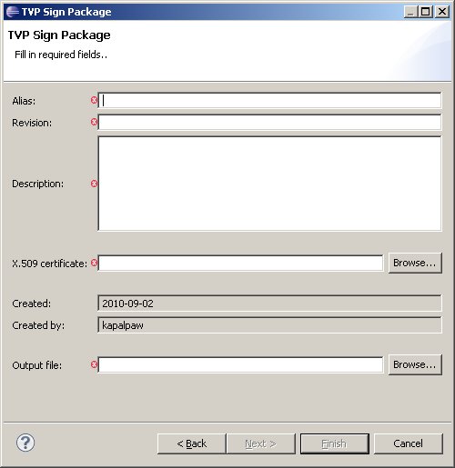

How to create an TVP sign package
TVP Sign Wizard prepares a sign package for sign server to enable signing of TVP licenses.
Instructions
Open the TVP Sign Package Wizard by completing the following steps:
- In the Eclipse menu, select File -> New > Other... (or press Ctrl+N)
- Expand the Flash Kit category to make the Sign Packages category visible
- Expand the Sign Packages category to see the TVP Sign Package
- Select the TVP Sign Package and press Next
The following dialog will pop-up and the user must fill in correct values in order create the certificate:

Required Fields:
- Alias: Enter package alias string.
- Revision: Enter package revision.
- Description: Enter package revision.
- X.509: Provide path for the X.509 certificate.
- Output file: Provide path and file name for generated package.
Generated Fields:
- Created: Current date, this date will be written in the package.
- Created by: Currently logged user, this user will be written in the package.